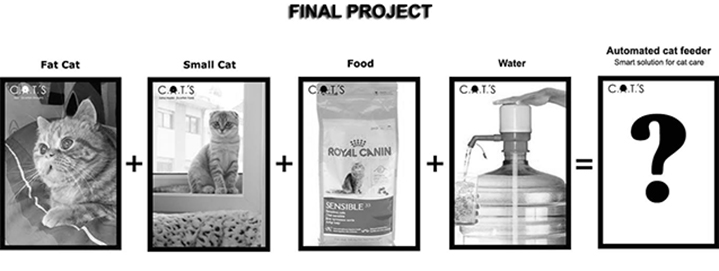

The Idea
I have two cats ( in the future a lot of small cats):
Siza (Male) and Zaha Hadid (Female)
And I need a smart food and water dispenser to follow my cat’s food consumption history, also notifies me when more water or food is required, and i want to create a restriction to the "fat" cat (Siza), because he eats all the food.
So I'll think of a feeder with two types of food that can identify the cat and help me to keep my cat healthy and happy, even when I’m away from home.
Automated Cat Feeder is a smart food and water dispenser for my two cats
To be able to check cats nutrition and daily consumption rate as well i get notifications when food and water supplies are lowering.
Food dispenser enables me to feed my cats just like the wild typical ones; it has a small bowl that allows to dispense small amounts of food frequently throughout the day. Its sealed reservoir conserves kibbles for one month and keeps them fresh and strong.
Water dispenser it keeps the water running and fresh and encourages cats to drink more. The water dispenser includes a filter, which removes bad tastes and smells which are annoying for cats.
- We can activate the water fountain continuously
- We can activate or deactivate the pump of the fountain at anytime we want (Example: You want it to be turned off during the night because you don’t want to hear the sound of the water flowing)
- We can activate it only when the cat is near the Automated Cat Feeder
Future improvements include ...
List of some parts and components that I need to make this project:
Snack Dispenser
MDF - Valchromat
Wifi Adaptor
Board PCB
Electronics kits and Components
Continuous Rotation Servo
Pin Headers for the Servos
10 Watt 5V USB Power supply
…